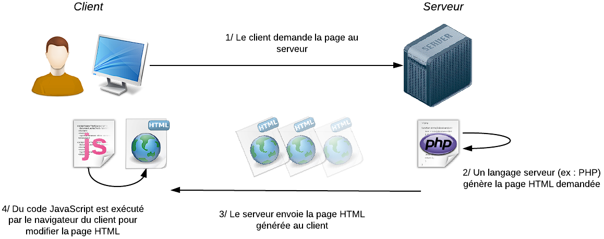
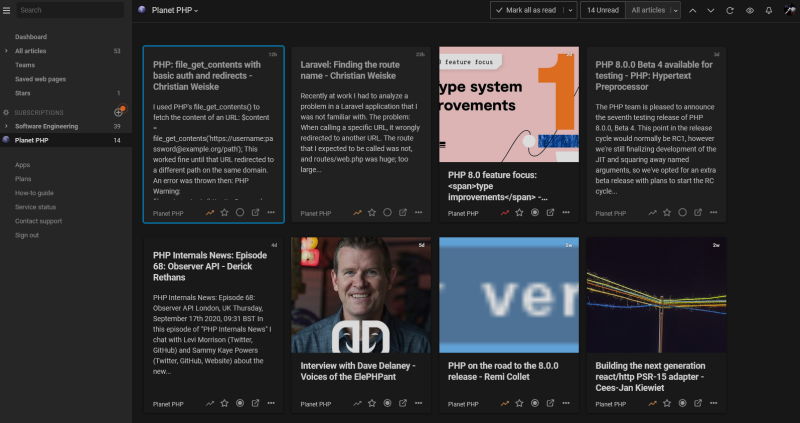
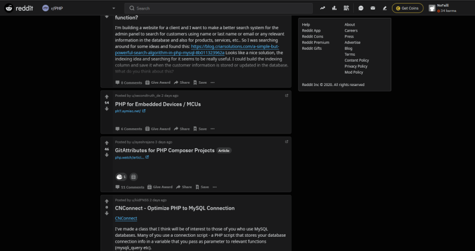
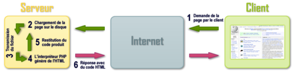

Mes projets
- Epreuve E4
- BKOFormidable
- M2L JPO
- Epreuve E6
- Portefeuille de compétences
- Veille technologique
Veille Technologique
La veille technologique consiste à se tenir au courant de l’actualité afin d’être à même de faire de meilleurs choix, d’innover, et de créer.
Thème
PHP (Hypertext Preprocessor) est un langage de programmation interprété. Il est diffusé sous licence libre, et permet la création de pages web dynamiques.
Il dispose d'un typage automatique, il n'est donc pas nécessaire de déclarer le type des variables et c'est la machine qui va se charger de définir le type automatiquement (cela permet d'écrire plus rapidement du code, mais cela a un impact sur les performances et sur la stabilité du code).

PHP bénéficie d'un large public, avec environ 80% des parts de marché en 2019 côté web serveur, car il s'harmonise parfaitement avec le HTML, et permet :
- De combiner des scripts PHP avec du code HTML
- D'intégrer tout type de caractères spéciaux (comme l'ASCII)
- D'utiliser vaste bibliothèque de fonctions et d'API : PHP a la capacité d'intéragir avec des bases de données, des systèmes de fichiers, etc... Cela fait de PHP une vaste boîte à outils pour les développeurs
- De rapidement créer des applications Web, en lien avec des bases de données, avec l'aide des documentations officielles disponibles en source libre.
Et surtout, PHP est multiplateforme : il peut être utilisé sous n'importe quel système d'exploitation, que ça soit Windows, MAC OS, ou Linux.
Démarche et outils
L'objectif principal de cette veille est de recueillir des informations régulièrement pour pouvoir suivre l'actualité concernant le PHP.
Au moins une fois par semaine, je me rends sur mes différents supports pour y recueillir dans la mesure du possible un ou plusieurs articles intéressants. J'utilise les supports suivants :
 Inoreader
Inoreader
Inoreader est un agrégateur de flux et un lecteur de contenu. Il permet de s'abonner à différents sites internet pour ensuite recevoir une notification lorsqu'un article y est publié. L'avantage de ce support est de pouvoir garantir un minimum d'un article par semaine, même s'ils ne sont pas forcément intéressants.
Reddit est un site web communautaire d'actualités sociales fonctionnant via le partage de données. Les utilisateurs du site peuvent lire et/ou poster des fils de discussion sur des sous-réseaux communautaires (dits subreddits). Il est évidemment possible de s'abonner à des subreddits afin de suivre l'actualité. L'avantage de ce site, c'est de pouvoir trouver de tout, et de manière quotidienne, que ça soit des tutoriels, des changelogs (journaux de modification), les différents événements prévus...
Je me suis abonné aux subreddits suivants afin de suivre mon thème de veille de manière quotidienne :
r/PHP : communauté princiale concernant le PHP. On y trouve des tutoriels, des questions/réponses, ainsi que diverses informations.
r/PHPhelp : communauté centrée sur l'entraide autour de PHP. Ce n'est pas directement utile en terme de veille technologique, mais cela me permet de voir les différentes réponses apportées à un problème.
Synthèse
Introduction
PHP (Hypertext Preprocessor) est un langage de scripts généraliste et Open Source, spécialement conçu pour le développement d'applications Web. Il peut être intégré facilement au HTML. Le code PHP est éxécuté côté serveur. Ce conde renvoie du HTML, qui va permettre au client de pouvoir communiquer avec une base de données.
PHP est très répandu sur le Web. En effet, il est présent sur plus de 76% des sites web.
Fondamentaux
Pour bien comprendre et utiliser PHP, il faut commencer par le commencement. PHP s'intègre directement dans les pages HTML. Il est donc indispensable de connaître un minimum les fondamentaux de la programmation web.
Il faut ensuite se munir d'un environnement qui nous permettra de développer du PHP en local, en lien avec un navigateur. Personnellement, j'utilise Laragon et WAMP.
Il est possible de programmer en PHP avec un simple éditeur de texte, mais ce n'est pas recommandé, car ça peut être assez pesant sans certaines fonctions utiles comme la coloration syntaxique. Il est donc recommander d'utiliser un environnement de développement tel que Visual Studio Code.
Références
Tutoriels
Il existe une multitude de tutoriels sur internet pour apprendre à développer en PHP. Au cours de cette veille, j'ai pu en recueillir quelques uns assez intéressants.
Sources d'informations
Il est toujours utile d'avoir des relais d'informations concernant la technologie que l'on veut étudier. Au cours de ma veille, j'ai trouvé plusieurs sites internets intéréssants :
Approfondir
PHP est un langage assez abordable pour n'importe quel développeur débutant. Néanmoins, il reste intéressant de chercher à optimiser son temps de travail. C'est là qu'interviennent les frameworks. En PHP, les frameworks les plus connus sont Laravel, Symphony, CodeIgniter, et CakePHP. Les frameworks sont des outils importants dans le monde professionnel, puisqu'ils permettent aux entreprises et aux développeurs de gagner un temps considérable lorsqu'ils développent des sites, des applications ou des fonctions.